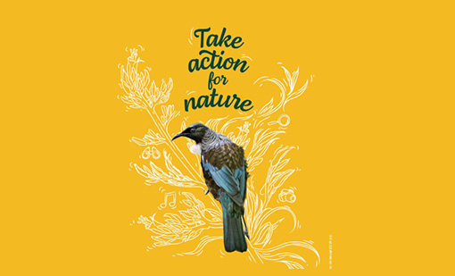
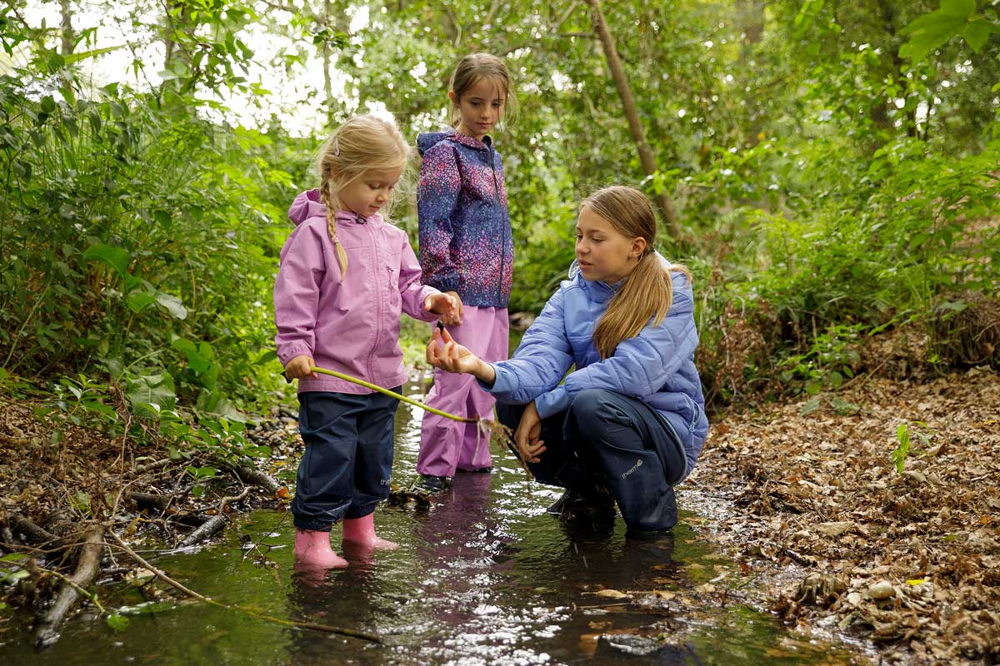
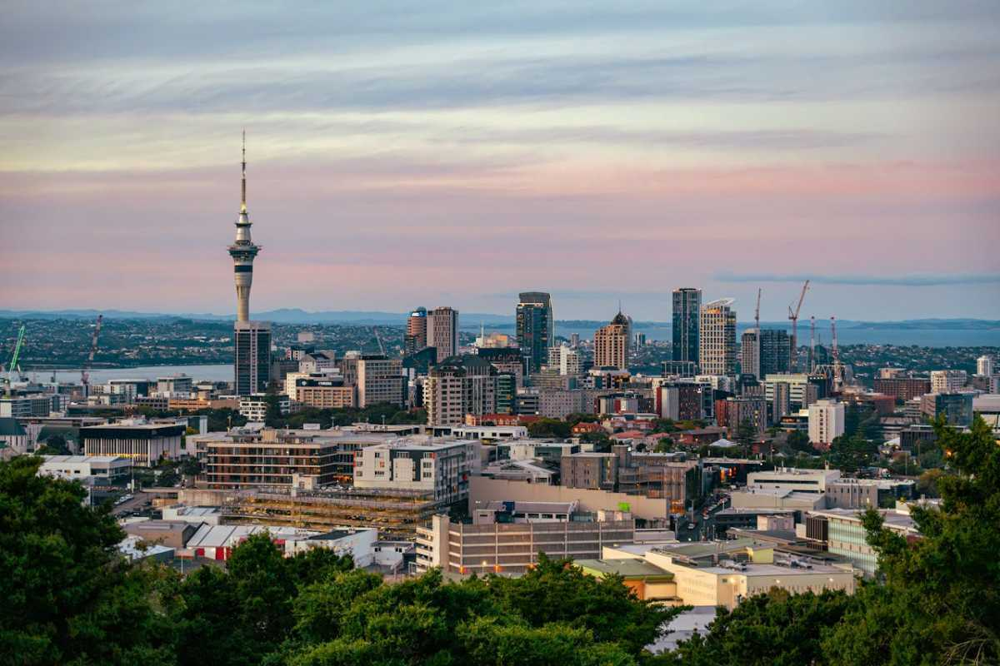
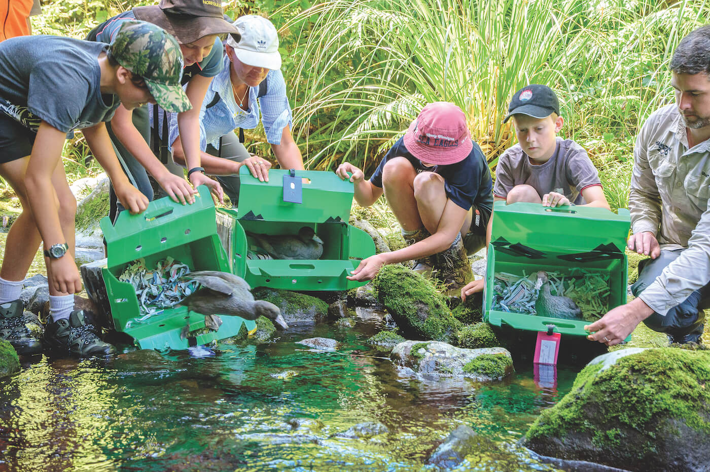
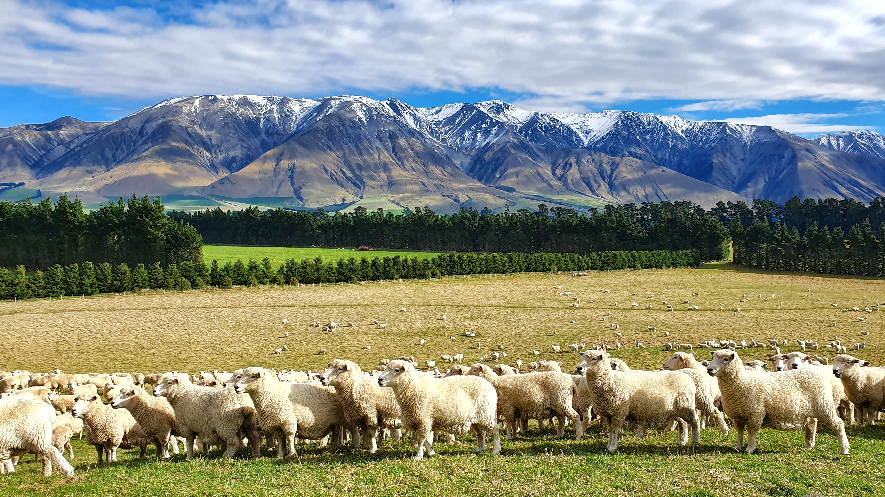

Volunteer and get involved in activities around New Zealand. The Department of Conservation welcomes community conservation groups, international volunteers, and offers a range of conservation activities.

Conservation Week
Volunteer and get involved in activities around New Zealand. The Department of Conservation welcomes community conservation groups, international volunteers, and offers a range of conservation activities.
Free Online Courses
Expand your knowledge with these courses provided by the Department of Conservation. This page provides different courses from identifying birds, to using a helicopter safely, biosecurity, and even field skills.

Kids Conservation Activities
Find conservation activities children can do outdoors and at home. The Department of Conservation provides a range of activities ranging from finding predators, attracting birds, picking up rubbish, identifying birds, and more that anyone can do in their backyard.

Support DOC with your Business
Your business can play a role in restoring nature. This page provides ways businesses can volunteer, donate, ways to help nature, and also gives examples where businesses have helped nature.

21 Actions
Provided by the Ministry for the environment, these are 21 actions anyone can do. These actions range from cleaning up a beach, planting trees, eating less red meat, and preventing waste at home.
Have Your Say
You can have your say on the Department of Conservation issues they are consulting. The Department of Conservation is seeking comments from anyone about certain issues. You can also view past and old consultations.
Drone Rules
Here, you can learn about operating drones on public conservation land and how to apply for a drone permit. Drone use must be regulated to protect local wildlife and considers people's privacy.

Agricultural Emissions Calculator
This calculator provides a simple estimate of the greenhouse gases emitted and absorbed by your farm. It works using the MfE 2022 Measuring Emissions Guidance, using the animals, fertiliser, and forest you have at your farm.